![\([J_i,J_j]=i\hbar\epsilon_{ijk}J_k\)](m/824bfa5ca1ad4a5b6f7fa2c3963190b2098628a8.svg) ; from this alone,
; from this alone,  and
and  ,
,  .
.
Statement
Rotation by angle  about
about
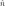
: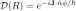
. Because rotations about different axes do not commute (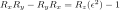
), the generators obey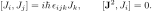
Proof of the spectrum
- Ladders
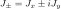
: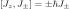
,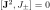
(Born et al. 1926). So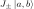
has the same eigenvalue
eigenvalue  and eigenvalue
and eigenvalue 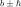
. 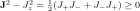
gives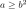
: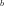
is bounded; there is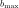
with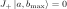
.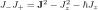
. Applying to the top state: . Similarly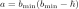
, so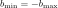
.- Reaching from in integer steps:
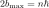
. Call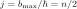
: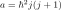
,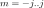
. - Norm:
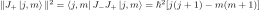
.
Matrices
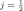
: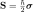
with the Pauli matrices,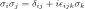
, and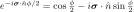
.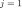
: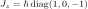
,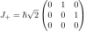
.Worked example
 :
: Engineering applications
Spin qubits, NMR pulse sequences (products of rotations), polarisation optics (Jones calculus is the representation: the Poincaré sphere), angular-momentum selection rules in lasers and spectroscopy.
Pitfall
Half-integer
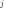
is allowed by the algebra but not by orbital angular momentum, where single-valued wave functions force integer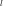
.